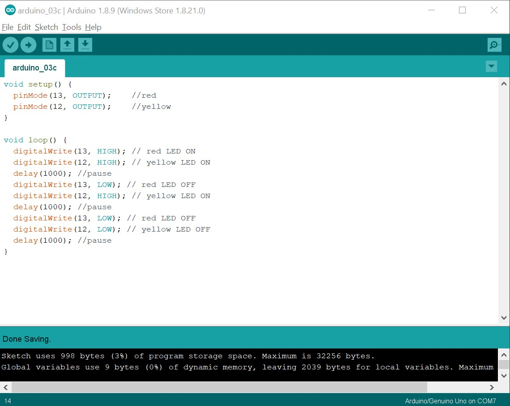

For this excersize we use 2 LED lights. A yellow and red one. At first I'll let the lights blink at the same time.
Now for excersize 3b I'll change the code so the LED lights will blink alternately.
Now for 3c the LED lights will blink at different speeds. The yellow LED seemed to be way brighter than the red LED. In the next assignment I found out it was because I used one wrong resistor.
With this excersize we try out different brightness levels. For the first part we'll alternate between de red and yellow LED brightness. The red LED will be at maximum brightness when the yellow one is at half brightness. Than after a delay of 1 second the yellow light will be at maximum brightness and the red one will be off. This is where I realised I used one wrong resistor. The yellow one was softer this time, but was brighter when I put it in the spot of the red one. So I googled what 220 ohm resistors looked like. They look way to similar in my opinion.
Now we change the code so one LED slowly fades from 0 to 255. (off to maximum brightness)
For the last part we'll change the code so both LED's fade but alternate. So when the red LED fades in, the yellow LED fades out.
With this excersize we have to use a potentiometer. This has a rotating knob which gives gives a value from 0 to 1023. I want to control the LED brightness with the potentiometer so in the first part of the excersize I have to add code to scale the potmeter value from 0 - 1023 to 0 - 255. This makes sure the maximum potmeter value is equal to the maximum LED brightness level.
Now we use the function map() to make the LEDs behave differently based on the input. By mapping the value read from the potentiometer I could let the yellow LED go from max brightness to off oposite from the red LED. This was possible by using mapping sensorValue to 0-1023 = 0-255 and mapping sensorValue2 to 0-1023 = 255 - 0. This means that when the potentiometer gives the value of 0 the red LED gets the value of 0 but the yellow LED gets the value of 255.
With this excersize we use another sensor than the last one. This time it's an LDR sensor, which stands for Light Dependent Resistor. This sensor measures the amount of light and puts out a value. The more light it measures the higher the value. For this excersize the potentiometer is replaced by the LDR and this will control the LED brightness. In ideal circumstances the LDR values will range from 0 to 1023, like the potentiometer, but in most cases it will be a different range. This is caused by the amount of light in the room you use it in. In my case the lowest value was around the 480 and the highest at 880. However I chose to map it at a range of 500 - 850 because this way it would be easier to get the LEDs to the on and off points. This means that with an input of 500 the LED will have an output of 0 and with an input of 850 it will have an output of 255. Because it sometimes dropped at bit below or over those values I added the function constrain. This makes sure the input values will never be under 0 or over 255. If I wouldn't have added this the LED would turn on as soon as the input was below 500 because that would correspond with a negative value for the LED. Example: If the input from the LDR = 500, the LED gets a value send of 0 and turns off. If the input from the LDR = 480, the LED gets a value of -20 and turns back on.
Because I already had the code to make the LEDs fade seperately I just added that to this as well to make it a bit more fun.
This assignment was a harder one, so I tried to make it work together with another student. The images below are made by her: Lisa van Velden.
The both of us could not make it work the way it was supposed to, so we made a code based on assignment 5 to at least let it do something.
With this excersize the goal is to connect the arduino code with the programm processing. Processing is a tool you can use for audio or visual output in combination with your laptop or other devices. With this excersize I'll test the combination of arduino as input and processing as output. To test this the arduino code is a simple code from like the previous excersizes where the items are declared and a loop is written to process the potentiometer value. The processing code reads the value and uses it to determine the size of an ellipse. By turning the knob the ellipse gets bigger or smaller.
For the next one I changed the code to create a different output. Here I've made Mickey Mouse from ellipses. The eyes and mouth values change by turning the knob so the eyes move from left to right and the mouth goes from small to big.
This excersize was also done with Lisa van Velden. The pictures we used were made by her. In this one we had to use buttons. The code had to be written in a way to make the light go in when the button was pressed and off when pressed again. We also had to try different codes for two buttons attached. I did not have buttons wich is why I had to work with another student on this one. We forgot to film a result and I cannot replicate it without the buttons so unfortunatly I don't have an video for this one.
With this excersize I'll move a servomotor with arduino code. Here you can see it's moving in a certain rhytm.
I also did this excersize together with Lisa van Velden. Again, the pictures are made by her. We again didn't film and we used buttons for it to work so I wasn't able to replicate the excersize at home and make a video of it.
With the last assignment we use a Piezo. This is a small speaker that producess notes based on frequency. With this excersize I put a few different notes after eachother to play a simple melody.